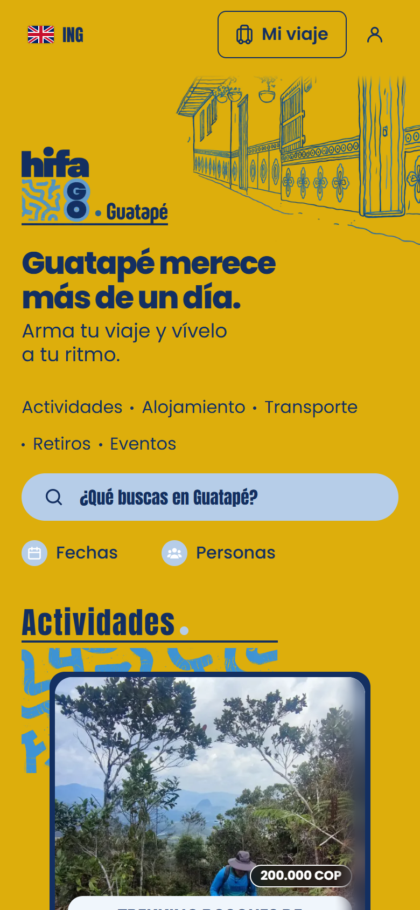
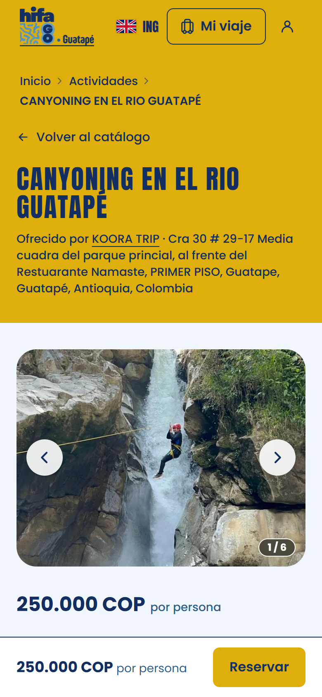

Propuesta de alianza · Equipo comercial de Los Patios
Una alianza para que Los Patios gane el 8 % de cada estadía que recomienda en Guatapé, sin costo, sin inventario y sin cambiar el precio para el huésped.
Hifago × Los Patios
La propuesta en 30 segundos
de comisión sobre el valor total de cada servicio realizado: alojamiento, transporte, actividades y tours.
de inversión. Sin inventario ni posventa: Hifago gestiona la reserva, el anticipo y a los prestadores.
mismo precio para el huésped, con o sin el QR de Los Patios: la comisión sale de la parte de Hifago.
de piloto en Los Patios Medellín, con metas acordadas antes de empezar.
De hostal a hostal
Casa Kayam es un hostal a orillas del embalse. Conocemos la recepción desde adentro: el huésped que pregunta «¿y después qué hago?», el tour que se vende por defecto, la estadía que se queda corta.
Hifago es nuestra respuesta: una plataforma colombiana donde el viajero arma su viaje con prestadores locales, dónde dormir, cómo llegar y qué hacer, en un solo carrito y con disponibilidad en tiempo real.
Lo que proponemos
01 / La oportunidad
Guatapé es la excursión más conocida desde Medellín. Pero el formato de ida y vuelta deja poco tiempo al viajero y poco dinero al pueblo.
visitantes en Guatapé en 2025, unos 200.000 al mes.1
de los visitantes se queda un solo día en el municipio.1
son turistas internacionales, y el 81,3 % llega por primera vez.1
Cada visitante que pasa de la primera franja a la segunda deja más en el pueblo. Con Hifago, el 8 % de lo que gasta queda además para quien se lo recomendó.
Alcaldía de Guatapé, Sistema de Información Turística (sondeos de marzo y abril de 2026).
Lo que pide el destino
Según la Alcaldía, las visitas cortas promovidas por operadores externos reducen el gasto en alojamiento, comida y comercio local.1 Desde 2025, el municipio cobra un aporte a las empresas externas que operan tours en Guatapé y les recomienda trabajar con guías y servicios del pueblo.2
En Guatapé, el 92 % de la población vive del turismo.2
Lo que buscan los viajeros
Booking.com, encuesta 2025 a 32.000 viajeros de 34 países.3
Y el flujo crece
Medellín recibió cerca de 1,2 millones de turistas extranjeros en 20254 y fue la ciudad colombiana más buscada por viajeros extranjeros en Booking.com para ese año.5 Para muchos de ellos, Guatapé es la excursión obligada desde la ciudad.
La pregunta ya no es si sus huéspedes van a Guatapé, sino si se quedan, y quién se lo propone.
Esa recomendación vale el 8 % de toda la estadía.
02 / Lo que gana Los Patios · Ingresos
8 % sobre alojamiento, transporte, actividades, tours y eventos de pago reservados con un código de Los Patios.
Sin inventario, sin cobros, sin posventa. Hifago gestiona la reserva, el anticipo en línea y la relación con cada prestador.
El precio y el anticipo no cambian con el QR: la comisión de Los Patios sale de la parte de Hifago, nunca del bolsillo del huésped.
Si el huésped tiene cuenta Hifago, sus reservas siguientes también quedan atribuidas a Los Patios, mientras no llegue con el enlace de otro aliado.
El huésped que sigue su ruta o no quiere un tour de un día hoy no deja nada en recepción. Con Hifago deja el 8 % de su estadía.
Un panel de aliado muestra cada reserva atribuida y su comisión: Estimada, Ganada, por pagar o Pagada.
Dos viajes armados con precios publicados en hifago.co el 9 de noviembre de 2026
| Servicio | COP |
|---|---|
| Bus compartido El Poblado ↔ Guatapé, ida y vueltaAeroTurex | 80.000 |
| 2 noches en dormitorio compartidoLakeview Hostel · 51.000 por noche | 102.000 |
| Canyoning en el río GuatapéKoora Trip | 250.000 |
| Total del viaje | 432.000 |
| Comisión Los Patios (8 %) | 34.560 |
| Servicio | COP |
|---|---|
| Transporte privado Medellín ↔ Guatapé, ida y regresoGotravel · 326.000 por trayecto | 652.000 |
| 2 noches en habitación dobleLakeview Hostel · 140.000 por noche | 280.000 |
| Tour en lancha rápida × 2Gotravel | 492.000 |
| Taller de chocolate × 2Coscun | 180.000 |
| Total del viaje | 1.604.000 |
| Comisión Los Patios (8 %) | 128.320 |
Escenarios por mes
Ilustrativo: la meta real se fija juntos antes del piloto. La comisión se gana sobre servicios realizados.
| Viajes / mes | Ventas en Guatapé | Comisión / mes | Comisión / año |
|---|---|---|---|
| 10 | 5.000.000 | 400.000 | 4.800.000 |
| 25 | 12.500.000 | 1.000.000 | 12.000.000 |
| 50 | 25.000.000 | 2.000.000 | 24.000.000 |
03 / Lo que gana Los Patios · Marca
Los Patios se presenta como una marca colombiana hecha por colombianos (#WeAreColombia), que promueve un estilo de vida sostenible y piensa global para actuar local.6 Esta alianza lo vuelve concreto en el viaje de cada huésped.
Guatapé pide estadías más largas y más gasto local. Recomendar quedarse, con prestadores del pueblo, pone a Los Patios del lado de la solución, no del turismo de paso.
Tres de cada cuatro viajeros quieren que su gasto beneficie a la comunidad local.3 Una recomendación con nombres propios, un hostal a orillas del embalse, un maestro del zócalo, una chocolatería del pueblo, se siente auténtica, no como un tour más.
«¿Y después de Medellín?» tiene por fin una respuesta concreta: disponibilidad real, precios claros, en español y en inglés, sin que el equipo tenga que coordinar nada.
Anfitriones, guías y artesanos de Guatapé: contenido para Instagram que encaja con #WeAreColombia, con un enlace medible en cada pieza.
Al cierre del piloto: noches reservadas en Guatapé y ventas generadas para negocios locales. Datos reales para su comunicación de sostenibilidad.
¿Y el tour de un día de Los Patios?
El tour sigue siendo la opción para quien tiene un solo día. Hifago es para el huésped que quiere más tiempo, y abre dos fórmulas que suman en vez de restar:
Una escapada de 1 o 2 noches con el equipaje guardado en Los Patios y la vuelta reservada allí. Los Patios no pierde al huésped: lo recupera con una estadía más larga en la región.
El tour de un día con la opción de quedarse en Guatapé y regresar al día siguiente. Hifago aporta el alojamiento y las actividades locales; Los Patios gana sobre ambos.
04 / Cómo funciona
Uno por canal o por persona del equipo, por ejemplo LOSPATIOS-RECEPCION LOSPATIOS-WA LOSPATIOS-IG. Cada código tiene su enlace y su QR, descargable en SVG para imprimir. Todos suman a la cuenta de Los Patios.
En el check-in o el check-out, y por WhatsApp: «¿Cuál es tu siguiente parada?». Si el huésped quiere más que un día, le comparte el QR, en español o en inglés.
Elige alojamiento, transporte y actividades en Mi viaje, con disponibilidad real, y paga en línea un anticipo. El saldo lo paga directamente a cada prestador.
El código se guarda en cuanto el huésped añade su primer servicio a Mi viaje. El mejor momento es ahí mismo, en recepción o en el rooftop.
Cuando el servicio se presta, la comisión pasa de Estimada a Ganada, por pagar, y Hifago la paga por Mercado Pago.
Ejemplo de QR
hifago.co/es/r/LOSPATIOS
El QR apunta a un enlace corto: un material ya impreso sigue funcionando aunque cambie la web.
Frase para recepción
«¿Cuál es tu siguiente parada? Guatapé merece más de un día: con este QR eliges dónde dormir, cómo llegar y qué hacer.»
“What’s your next stop? Guatapé deserves more than a day: scan this to choose where to stay, how to get there and what to do.”
Reglas de la comisión
| Base | 8 % del valor total de cada servicio reservado con un código de Los Patios. |
| Cuándo se gana | Cuando el servicio se presta. |
| Si el prestador cancela | El huésped recupera su anticipo y no hay comisión. |
| Si el huésped cancela o no llega | No hay comisión: esa parte compensa al prestador por el cupo bloqueado. |
| Eventos gratuitos o pagados en sitio | Sin comisión: no pasa dinero por Hifago. |
| Pago | Por Mercado Pago, a la cuenta que Los Patios designe, con el detalle visible en el panel. Frecuencia a acordar: proponemos mensual. |
| Equipo | El panel muestra las ventas de cada código: Los Patios decide cómo reconocer a su equipo. Si lo prefiere, una persona puede tener su propia cuenta de aliado y cobrar directamente. |
05 / La plataforma


Capturas de hifago.co en móvil, 9 de noviembre de 2026.
06 / Piloto y próximos pasos
Los Patios designa a un responsable y la cuenta Mercado Pago que recibe la comisión. Hifago crea los códigos, entrega los QR y los mensajes en español e inglés, y capacita al equipo en 20 minutos.
En check-in, check-out y WhatsApp. Un seguimiento semanal de 15 minutos.
Comparar canales, momentos y mensajes; quedarse con lo que funciona.
Primera pieza co-firmada en Instagram. Cierre con cifras y decisión sobre la continuidad.
Metas, fijadas antes de empezar
Hifago mide cada resultado por código. La recepción anota a cuántos huéspedes presentó el QR, para calcular la conversión.
Si funciona
Cool Living, Laureles: huéspedes en habitación privada, viajes de mayor valor; el bus compartido también sale de Laureles.
Los Patios Cartagena: proponer Guatapé antes de que el viajero llegue a Medellín.
Marca compartida · tres piezas para lanzar juntos
Reels y Stories co-firmados con anfitriones de Guatapé. Cada pieza lleva su propio enlace medible, con el código LOSPATIOS-IG.
Cómo llegar desde El Poblado, dónde dormir, qué hacer, y cómo cuidar el embalse y el descanso del pueblo. Con QR, en recepción y por WhatsApp.
Cápsulas con guías, artesanos y alojamientos locales y, al cierre del piloto, las cifras: noches y ventas generadas en el pueblo.
Reunión con el equipo de Los Patios · 25 minutos
Decisiones para salir de la reunión
Jérôme Filippi · Hifago · hifago.co
Fuentes
1. La Prensa Oriente, «Guatapé debatió retos del turismo y avanza en gobernanza del sector», 1 de junio de 2026, con datos de la Alcaldía de Guatapé. 2. Infobae, «Se desbordó el turismo en Guatapé…», 18 de febrero de 2025. 3. Booking.com, Sustainable Travel Research 2025 (32.000 viajeros, 34 países), reseñada por TTG Asia, 7 de mayo de 2025. 4. Blu Radio, «Más allá de la Comuna 13: por qué Medellín se consolidó como el destino de moda en Latinoamérica», 9 de octubre de 2026. 5. El Colombiano, «Las claves de empresarios para consolidar a Medellín como la ciudad más turística del país», 8 de marzo de 2025. 6. lospatioshb.com y Hostelworld, consultados el 9 de noviembre de 2026. Precios y prestadores: hifago.co, 9 de noviembre de 2026.